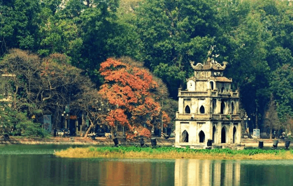

Hanoi
Hanoi - The Capital of S-shaped country
Hanoi is the capital city of Vietnam. It covers an area of 3,358.6 km2 (1,296.8 sq mi). The second largest city in Vietnam, it consists of 12 urban districts, 1 district-leveled town and 17 rural districts. Located within the Red River Delta, Hanoi is the cultural and political centre of Vietnam.
PLACES TO CHECK OUT
SWORD LAKE

Hoan Kiem Lake, also known as Sword Lake, is a natural freshwater lake located in the center of Hanoi. The lake has an area of about 12 hectares. Previously, the lake was also known as Luc Thuy lake (because the water is clear all year round)... See more
TEMPLE OF LITERATURE
Temple of Literature is a temple dedicated to Confucius in Hanoi, northern Vietnam. The temple also hosts the Imperial Academy, Vietnam's first national university... See more
MUST-TRY DISHES
BEEF NOODLE

Pho Hanoi is not only a separate dish of the land of Ha Thanh, but it is also imbued with Vietnamese culinary culture... See more
KEBAB RICE NOODLES

Kebab Rice Noodles is a Vietnamese dish, consisting of vermicelli, grilled pork rolls over charcoal and a bowl of sweet and sour fish sauce....See more